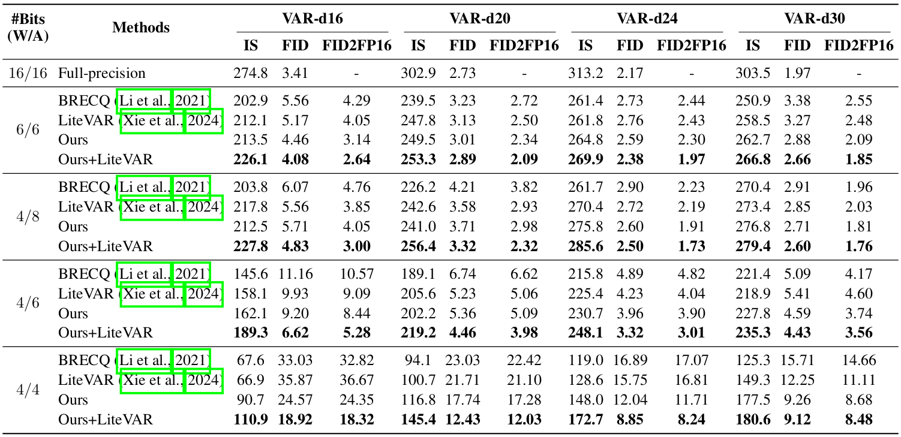
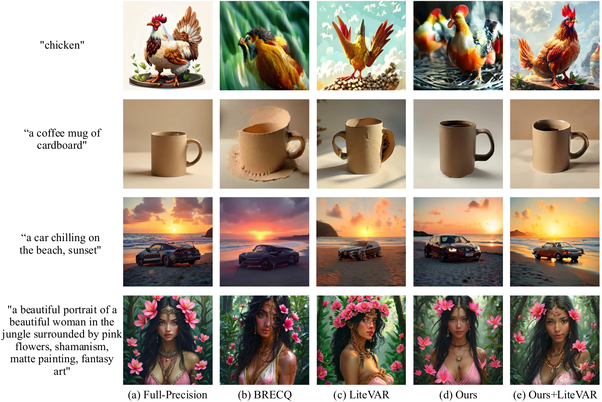

Abstract
Post-training quantization (PTQ) enables efficient deployment of deep networks using a small set of data. Its application to visual autoregressive models (VAR), however, remains relatively unexplored. We identify two key challenges for applying PTQ to VAR: (i) large reconstruction errors in attention–value products, especially at coarse scales where high attention scores occur more frequently; and (ii) a discrepancy between the sampling frequencies of codebook entries and their predicted probabilities due to limited calibration data. To address these challenges, we propose a PTQ framework tailored for VAR. First, we introduce a shift-and-sum quantization method that reduces reconstruction errors by aggregating quantized results from symmetrically shifted duplicates of value tokens. Second, we present a resampling strategy for calibration data that aligns sampling frequencies of codebook entries with their predicted probabilities. Experiments on class-conditional image generation, inpainting, outpainting, and class-conditional editing show consistent improvements across VAR architectures, establishing a new state of the art in PTQ for VAR.
Quantitative results

Quantitative comparison of quantizing VAR with various methods for the task of conditional image generation on ImageNet. We denote by W/A the bit-widths of weights (W) and activations (A), respectively. We report IS, FID, and FID2FP16 for VARs of varying depths. Note that we have re-implemented LiteVAR for a fair comparison under consistent evaluation settings.
We show in this table a quantitative comparison of our method with prior approaches for the task of class-conditional image generation on ImageNet. We can see that our method consistently outperforms BRECQ across all bit-widths and architectures, demonstrating the effectiveness of the proposed shift-and-sum quantization and calibration data resampling techniques. In addition, our method achieves quantization performance comparable to LiteVAR, although it retains FC layers after GELU non-linearity in full-precision, which is suboptimal in terms of efficiency. Finally, applying our approach in combination with LiteVAR yields further improvements, suggesting that the two approaches are complementary.
Qualitative results

Comparison of generated images using Infinity-2B (Han et al., 2025) and its quantized counterparts using different methods.
We show in this figure a qualitative comparison of images generated by Infinity-2B quantized with BRECQ, LiteVAR, and our method. We can see that our method
consistently produces images with better fidelity compared to other methods.
Acknowledgements
This work was supported in part by Institute of Information & Communications Technology Planning & Evaluation (IITP) grant funded by the Korea government (MSIT) (No.RS-2022-00143524, Development of Fundamental Technology and Integrated Solution for Next-Generation Automatic Artificial Intelligence System, No.RS-2025-09942968, AI Semiconductor Innovation Lab (Yonsei University)), and the National Research Foundation of Korea (NRF) grant funded by the Korea government (MSIT) (RS-2025-02216328).